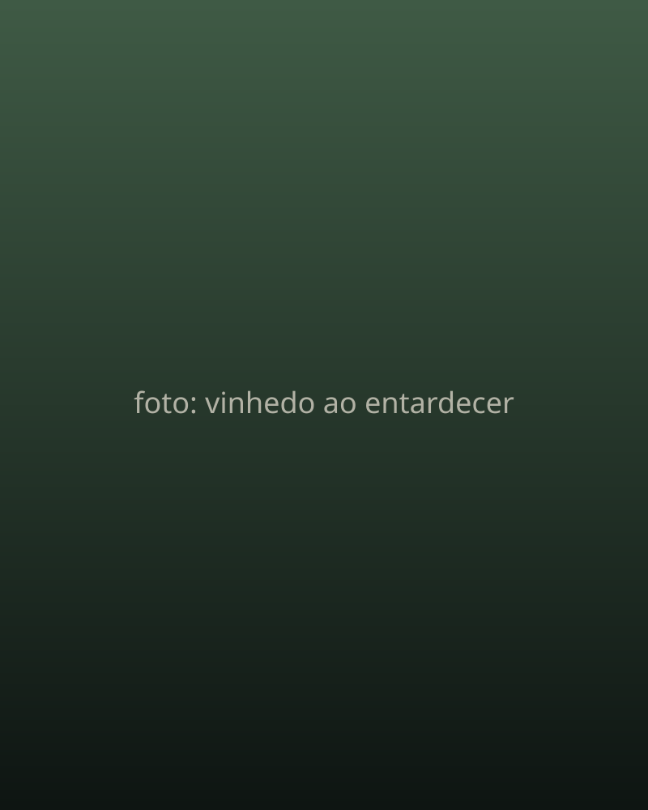
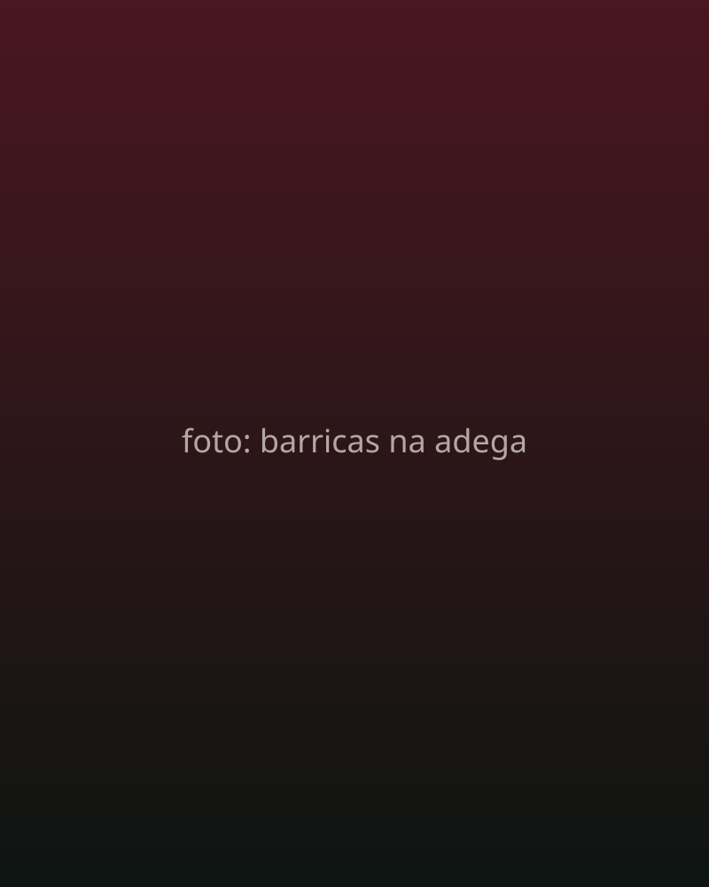
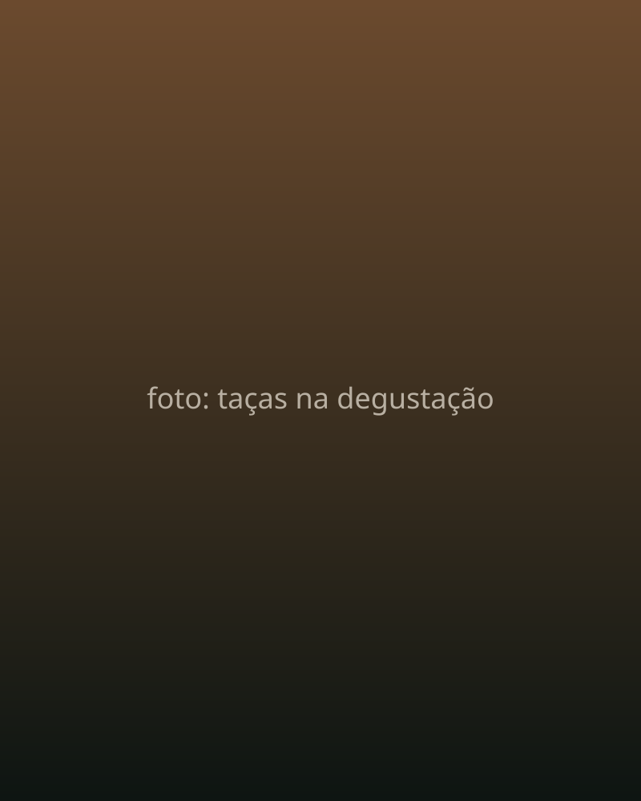

Serra Rubra
Vinhos de altitude da serra gaúcha. Desde 1998, uma safra de cada vez.
Role para descerManifesto
Fazemos vinho no alto da serra, onde a neblina chega antes do sol. Não seguimos receita: seguimos a safra. Cada garrafa guarda um ano inteiro de vento, chuva e paciência, e só sai daqui quando está pronta para ser aberta numa mesa cheia.
Do vinhedo à taça
-
Terroir
Basalto, altitude e noites frias. O solo da serra dá aos nossos vinhos uma acidez viva e uma mineralidade que não se imita.
-
Videira
Cada parreira é podada à mão. Menos cachos por planta, mais concentração em cada uva.
-
Colheita
Colhemos de madrugada, em caixas pequenas, para a fruta chegar fresca e inteira à vinícola.
-
Fermentação
Leveduras nativas e tanques com temperatura controlada. É aqui que o suco começa a virar vinho, sem pressa.
-
Barricas
Os tintos de guarda descansam em carvalho francês de 12 a 24 meses, ganhando corpo e camadas.
-
Engarrafamento
Rolha natural, rótulo aplicado à mão e mais alguns meses de repouso na adega antes de chegar até você.
Os vinhos
Dez rótulos, uma mesma serra.
O que vai para a mesa hoje?
Escolha o prato. A gente escolhe o vinho.
Escolha um prato acima para ver nossas sugestões.
Venha ver de perto
Passeio a pé pelo vinhedo, visita à adega subterrânea e degustação guiada de cinco rótulos, com queijos da serra. De quinta a domingo, sempre com reserva.
Agendar visita

